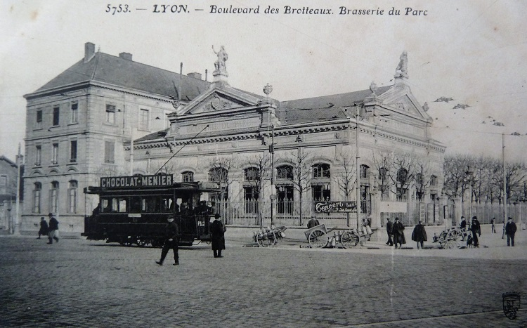
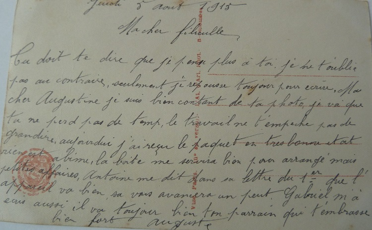
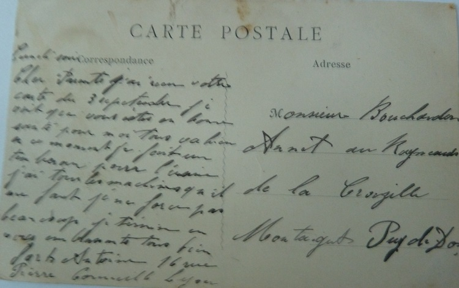

Antoine et l'appareil
Antoine connaît un parcours différent de ses deux frères, sa blessure est plus grave et pour cette raison il ne repartira pas au front.
Son parcours nous donne un autre éclairage sur cette période et sur les prémices de deux tendances qui s’accentueront après la guerre, la mécanisation des campagnes et l’exode rural vers les grandes villes et les usines.
Tout cela se passe en été 1915, en pleine période des foins et des moissons. Après l’été 1914, ce sont les secondes récoltes à réaliser sans les hommes et cette chanson sur les moissons illustre bien la pénibilité de ces deux tâches : un travail d’homme à faire sans hommes … la terre est basse et la faux vous casse les reins …
Avril 1915 … Antoine vient de passer une visite médicale. Pour l'instant il reste en sursis et ne rejoint pas ses camarades sur la ligne de feu, il est versé dans l’Auxiliaire et est affecté à la coopérative du dépôt. Il aurait sans doute préféré retourner au village, mais l’Armée ne relâche pas ses hommes facilement.
Chers Oncle, Tante et Marraine,
J’ai attendu jusqu’aujourd’hui pour vous écrire comme je devais passer la visite. J’attendais pour vous dire le résultat.
On m’a versé dans l’auxiliaire. J’aurais préféré une convalescence. On ne fait pas ce que l’on veut. Je pense rester à la compagnie.
Maintenant, je suis employé à la coopérative. Je n’ai pas grand-chose à faire, ça me fait passer le temps. Je n’ai pas vu Auguste depuis jeudi, je compte le voir demain dimanche.
Gabriel m’a écrit, il va toujours bien. Il doit m’envoyer un des ces jours sa photographie. Je vois pas grand-chose de plus à vous dire.
Je termine en vous embrassant tous bien fort.
Antoine
Au feu de la bataille, la guerre forge des amitiés solides et une franche camaraderie. Même s’il reste à l’arrière, Antoine entretient une correspondance fournie avec ses copains de régiment.
Mon cher Antoine,
Je viens de recevoir aujourd’hui une lettre de Marie me disant que tu es en permission, mais j’avais mieux espéré, c’est trop court.
Dis-moi ce qu’ils pensent faire de toi. C’est triste d’être estropié et d’être traité comme on est. Ici vois, on est pire que des Boches. La reconnaissance, ils en ont guère, ce n’est pas la peine d’aller se faire casser la figure pour eux.
Tu m’écriras longuement.
Bonjour à tes bons parents, sans oublier Maria.
Ton cousin qui pense souvent à toi et qui t’embrasse bien fort.
Annet
Mon cher Antoine,
Je pensais recevoir ces jours de tes nouvelles. Comment vas-tu, que fait-on de toi ? Moi, c’est toujours la même chose. Gabriel m’a écrit hier, il est en bonne santé.
J’ai reçu des nouvelles de chez toi. Ta petite Maria m’a écrit et envoyé un bon colis où il y avait un pâté à la viande qui était rudement bon. Elle me dit qu'Auguste est reparti voir les Boches, tu me diras si c’est vrai.
A la Crouzille, ils ont encore reçu le mortel de Célestin Virmont, il a été enterré par les Boches le 29 Août. Maxime Berthon est prisonnier.
A bientôt de tes nouvelles qui, je souhaite, sont bonnes.
Ton cousin qui t’embrasse bien fort.
A Conord

Mon cher Antoine,
Merci de ton aimable carte qui m’a fait bien plaisir, mais tu ne me parles pas de ton frère Auguste, ni de Gabriel. N’oublie pas de m’en donner des nouvelles quand tu m’écriras.
Ce matin j’ai reçu une lettre de Colin, il me dit qu’il est toujours en bonne santé et de donner le bonjour à tous les copains.
Mon cher Antoine, Cornillon me charge de te donner le bonjour de sa part. Je te dirais qu’on a reformé un bataillon et j’en fais partie ainsi que Beaune et Cornillon. Nous sommes toujours à Nyons pour le moment et je ne sais pas quand on partira.
J’ai des nouvelles de … de temps en temps ainsi que Sermont. J’écris toujours quelque fois à mon commandant. Rien d’autre de nouveau à te dire pour le moment mon cher Antoine. Je termine en te serrant la main, ton copain pour la vie.
Raoul Bourge, à bientôt de tes nouvelles.
Je te dirais que mon frère est parti sur le front, tu peux croire que ma belle-sœur est chagrinée, enfin que veux-tu.
Chère cousine Maria,
Je fais réponse à ta lettre du 8 que je n’ai reçue qu’hier, tu vois comme c’est loin Montbrison, 5 jours des fois 6. Les postiers n’en font guère de travail.
J’ai été content en apprenant que vous étiez en bonne santé, et c’est déjà beaucoup d’avoir de l’ennui ailleurs sans en avoir à ce sujet.
Moi, tu sais, je suis toujours bancale, le mieux ne vient pas vite mais je suis tellement bien soigné … Quant à coucher sur la paille comme tu dis, je m’estime encore heureux – beaucoup de ceux qui sont au feu n’en ont pas tant. A eux doit aller toutes nos pensées, toutes nos prières, car ils en ont besoin.
Gabriel m’écrit de temps en temps, il ne se plaint pas trop, il me dit que tu pries bien pour lui et que la Sainte Vierge le gardera. Antoine m’a écrit qu’il avait été versé dans l’auxiliaire. Il aurait bien mieux valu qu’il soit réformé, mais enfin, il n’ira plus voir les Boches. Mais il ne me parle pas d’Auguste.
Ici le temps s’est remis au beau, j’espère que chez vous c’est de même, vous avez bien eu assez de mauvais. Je t’avais remerciée pour ton colis, mais pas encore assez, car tu sais tout était bon mais le pâté était exquis. Merci encore à vous pour votre bon cœur et avoir pensé à moi.
A vous tous mes meilleures pensées et à toi cousine Maria, un gros baiser.
Annet
Après un passage au Conseil de Réforme, Antoine est confirmé dans l’Auxiliaire. Il en informe la famille et s’empresse aussi de rassurer sa sœur Marie inquiète pour Gabriel …
Chers Parents,
J’ai reçu votre carte du 21 Avril, je suis content de voir que vous êtes tous en bonne santé. Je désire que ma carte vous trouve de même.
Pour moi, tout va bien, je passe mon Conseil Jeudi, je vous écrirai aussitôt. Probablement, je serai versé dans l’auxiliaire. Ma Compagnie va à Nyons Jeudi, comme je passe le Conseil je ne pars pas mais le chef m’a promis qu’il me ferait venir à sa Compagnie. Pour le moment, je serai versé à la section hors-rang qui reste à Lyon.
Si je pars, je vous enverrai un paquet des affaires que je n’ai pas besoin. Si vous avez besoin de quelque chose, vous me le direz et je le mettrai dans le colis.
Antoine
Chers Parents,
J’ai reçu votre lettre de Lundi. Je vois que vous êtes tous en bonne santé, je désire que ma carte vous trouve de même.
Ce matin, j’ai passé le Conseil de réforme, je suis versé au service auxiliaire, puis je dois passer une autre visite pour établir une petite pension, mais je ne sais pas si ça réussira. Je vois qu’ils vous ont demandé mes papiers, c’est sans doute pour ça.
Maria me dit que Gabriel lui a fait de la peine de voir qu’il avait pas les yeux bien naturels. Ça doit être le soleil qui lui a fait ça, il faut pas porter peine de ça, il n’a pas maigri. Je suis content d’avoir sa photo.
Auguste m’a écrit il y a trois jours, il va bien. Je vous disais que ma Compagnie part ce soir à Nyons. Il reste à Lyon que la section hors-rang. Moi, comme auxiliaire, je suis obligé de rester à Lyon. Le chef n’a pas pu m’emmener, ça fait que je passe à la section hors-rang.
Antoine

Et bien sûr, Antoine n’oublie pas ses deux petites soeurs.
Bonne fête.
Ton parrain qui pense à toi.
Antoine
Ton frère qui pense à toi et t’embrasse bien fort.
Antoine


Reçois de ton parrain un gros baiser.
Antoine
Antoine reçoit aussi des cartes de la famille étendue, telle cette carte de sa cousine Maria qui cherche à le réconforter. Dans ce style inimitable de nos campagnes où la délicatesse n’est pas toujours au rendez-vous des bonnes intentions, parlant à son sujet, la cousine écrit tout crûment : ce sera toujours un de sauvé !…
Cher cousin Antoine,
Je m’empresse de rendre réponse à ton aimable carte que je viens de recevoir à l’instant avec beaucoup de plaisir, car il en est de même chaque fois que tu envoies de tes nouvelles.
Tu me dis que tu es versé dans l’auxiliaire et que tu seras peut-être gratifié. Ce ne sera pas trop mauvais, c’est vrai que ton bras n’a pas bien de force mais ça viendra avec le temps. L’essentiel c’est que tu ne retournes pas sur le front. Ce sera toujours un de sauvé.
Tu mes dis qu’Auguste est dans la Somme. Je ne savais pas qu’il était parti car il y a déjà quelque temps que nous n’avons plus eu de ses nouvelles. Je suis contente de savoir que ton frère Gabriel va bien aussi.
Mon frère est toujours à Roanne, mais il s’attend au départ tous les jours.
Je termine en t’embrassant bien fort.
Ta cousine Maria.
Cher cousin,
Tu voudras bien m’excuser du long retard que j’ai mis à t’écrire. C’est bien un peu le temps qui manque, mais encore bien plus de la négligence.
Tu me dis qu’ils t’ont mis dans l’auxiliaire. Ils ne veulent pas du tout te réformer, enfin s’ils pouvaient te laisser là, tu es bien un peu mieux que dans les tranchées.
Rien de nouveau au pays, nous t’embrassons bien affectueusement .
Louise
Mai 1915 … Le Conseil de Réforme a finalement tranché … c’est la délivrance pour Antoine, il est officiellement réformé. Et déjà, aux Raynauds, on s’empresse de faire les préparatifs pour sa prochaine visite au village. Les deux jumelles sont toutes excitées, nous dit-on ….
Chers Parents,
J’ai reçu votre lettre du 8 Mai ce matin. Je pense que vous aurez reçu celle du 8 où je vous annonçais que j’étais réformé.
Vous pouvez croire que c’est avec plaisir que j’ai fait la lettre. Je ne suis pas bien mal à Lyon mais je serais beaucoup mieux avec vous.
Je ne sais pas quand je passerai ma visite pour établir la pension. Il faut bien compter au 25 Mai, maintenant je prends patience. Je vois que je serai vite débarrassé de ce fourbi.
J’ai reçu des nouvelles d’Auguste par un convoyeur qui avait passé la journée de samedi avec lui. Il se trouve mieux qu’à la caserne.
Je vous embrasse tous bien fort.
Antoine
Cher frère,
Deux mots à la hâte pour te dire de nous dire quand tu viendras, nous pourrions aller t’attendre.
Nous sommes en bonne santé. Tu parles des colis de Gabriel, réclame le si tu as droit. Ce n’est pas la peine de lui en envoyer de plus de deux livres, il ne l’a pas reçu. Tu donneras une idée s’il faut le réclamer.
Gabriel a écrit hier, Auguste samedi. J’espère que ta visite aura de bons résultats, nous pourrons passer la journée de dimanche ensemble. Le temps nous dure bien d’être avec toi. Augustine et Léa ne parlent que de ton arrivée. Justin Tauveron est venu pour cinq jours.
En attendant la grande joie que tu sois avec nous, je t’embrasse.
Maria
Antoine a passé une partie du mois de Juin à la ferme et a dû aider un peu pour faire les foins, bien que sa blessure l’empêche de travailler comme dans le passé. Le voilà de retour à Lyon, où il commence à jouer un nouveau rôle : celui de pourvoyeurs d’outils et de chantre de la mécanisation. Après tout, Antoine semble toujours avoir été celui de la famille attiré par l’artisanat et le progrès … rappelez-vous, il était apprenti chez un charron avant la guerre.
Cher cousin,
J’ai reçu ton aimable carte qui nous a fait bien plaisir d’apprendre de tes nouvelles. Nous nous allons très bien pour le moment.
Papa me dit de te remercier pour toute la peine que tu prends pour son étau, c’est bien trop de dérangement pour toi. Enfin tu n’as pas besoin de trop de gêner pour en acheter un autre si vite. Quand tu trouveras des occasions, ça ira bien, il nous fait pas faute.
Cher cousin, nous partons pour aller à la foire à Montluçon avec Papa. Nous allons coucher chez Maria.
Bien des choses affectueuses.
Louise
Chers Parents,
J’ai reçu votre lettre de Samedi, je vois que vous avez travaillé. A Lyon, il a fait beau depuis que je suis arrivé et je pense que c’est pareil chez nous. Il le faut bien pour finir ces foins.
J’ai reçu hier une lettre de Gabriel et d’Auguste. Ils vont bien. Gabriel avait passé un moment avec Bouchardon de chez Sivade. Depuis Samedi, je suis planton au bureau du Commandant pour remplacer l’autre pendant sa permission agricole. Il rentre le 20, je demanderai la mienne pour le 25.
Vous me donnerez des nouvelles de Blanc d’Ars, il doit être en permission de sept jours.
Je vois pas autre chose à vous dire. Je vous embrasse tous bien fort.
Antoine
Mais sa visite lui a sans doute fait réaliser que le travail de la ferme était trop dur pour les sœurs et le père. Avant de venir, il avait sans doute en tête que la solution était de moderniser la ferme et tous, ils on dû en débattre assis au tour de la table de cuisine en trempant leur pain dans la soupe.
La solution, c’est l’APPAREIL … et c’est Antoine qui l’achètera à la ville, dès son retour à Lyon.
Il est cher l’APPAREIL : 195 Francs et 70 centimes, soit 612 de nos Euros d’aujourd’hui. A l’époque, cela représente environ 1 mois et demi de salaire ouvrier …
Et il faut faire vite, les moissons approchent !
Chère sœur,
Je vous ai écrit ce matin, mais comme ce soir je suis allé au dépôt des machines Amouroux.
Ils expédiaient l’appareil et la barre coupeuse hier soir en grande vitesse. Vous l’aurez dans quelques jours, au commencement de la semaine prochaine.
Vous trouverez peut-être que je vous fais trop de frais, mais la barre sera très pratique. L’appareil coûte 70 francs et la barre 125, ce qui fait 195 Francs 70 centimes. C’est bien un peu cher, mais l’année prochaine ce sera pas mieux.
Il y a six colis, ce sera bien marqué sur la feuille et contre remboursement, vous paierez à la gare. Vous ferez attention que rien soit cassé.
Antoine
Bien cher Antoine,
Nous venons de recevoir la lettre d’avis pour toucher l’appareil.
C’est compté 202 Francs 40 et 6 colis comme tu disais. Sans doute qu’il n’y aura rien de cassé, nous irons le chercher demain. Espérons qu’ils donneront ta permission pour que tu puisses y faire marcher.
Auguste nous a envoyé la photo de son lieutenant.
Nous allons bien, je désire que tu sois pareil. En attendant le plaisir de te voir.
Je t’embrasse.
Maria
Mais quel est ce mystérieux appareil … C’est la faucheuse Hirondelle de chez Amouroux Frères !
Traditionnellement, au moment des moissons, le principal travail des hommes est la coupe des champs de blé à la faux. C’est un travail éprouvant , qui ne s’improvise pas et dont la pratique s’acquiert au fil des années. La faucheuse devient donc rapidement un outil essentiel qui remplace ces hommes partis à la guerre et qui accroît considérablement la cadence de coupe.
Selon la réclame, l’hirondelle, c’est tout simplement la meilleure faucheuse du monde.
Maria compte sur Antoine pour y monter et y faire marcher. Si le cœur vous en dit, voici la notice de montage de l’Hirondelle :
Mode d'emploi
Antoine est revenu au hameau des Raynauds pour monter la faucheuse, et c’est un grand succès et soulagement pour toute la famille : l’appareil marche à merveille. Et les commentaires vont bon train avec les frères restés au front. Comme le dit Gabriel, la faucheuse aisancera beaucoup pour faire la moisson !
Cher frère,
J’ai reçu hier ta carte du 24 Juillet. Je suis en bonne santé.
J’ai reçu hier la photo de Maria avec les deux petites. Elles sont sérieuses, mais ça les ressemble bien quand même.
Ils ont un appareil, Antoine va le monter et quand il fera beau , ils vont l’essayer. Ils feront la moisson assez tranquilles tout de même.
Gabriel Sol t’envoie le bonjour.
Pas grand nouveau. Ton frère qui t’embrasse.
Gabriel

Chère sœur,
J’ai reçu ce matin ta carte lettre, tu ramasses bien tes moments pour nous écrire.
Vous avez eu beaucoup de travail. Ici, depuis deux jours il pleut. Tu me dis que l’appareil va bien, tant mieux, ça vous avancera un peu. Antoine travaille un peu ces quinze jours, mais il se reposera à Lyon.
Chère sœur, tu mes dis que tu m’envoies un colis, ce n’est pas la peine de l’envoyer tout de suite. Je t’avais dit que ça ne pressait pas, tu prends bien trop de peine pour nous. Pendant les moissons, on n’a pas bien le temps de s’amuser, ce n’est pas la peine de m’en envoyer d’autre de maintenant. Quand j’en aurai encore besoin, je te le dirai.
J’avais demandé de la cire à Antoine, tu luis diras que ça presse pas et de m’envoyer juste ce que je lui ai demandé.
Le 2 Aout, je vous ai envoyé une grande lettre, tu me diras si vous l’avez reçue.
Pas autre chose de nouveau.
Auguste
Ma chère filleule,
Tu dois te dire que je pense plus à toi. Je ne t’oublie pas, au contraire. Seulement, je repousse toujours pour écrire.
Ma chère Augustine, je suis bien content de ta photo. Je vois que tu ne perds pas de temps, le travail ne t’empêche pas de grandir.
Aujourd’hui, j’ai reçu le paquet en très bon état. Rien n’est abîmé, la boîte me servira bien pour arranger mes petites affaires.
Antoine me dit dans sa lettre du 1er que l’appareil va bien, ça vous avancera un peu.
Gabriel m’a écrit aussi, il va toujours bien.
Ton parrain qui t’embrasse bien fort.
Auguste

Cher frère,
J’ai reçu ta lettre hier, alors l’appareil marche bien, ça aisancera beaucoup pour faire la moisson.
J’ai reçu hier le colis de fromage, ils sont très bons. A présent, je ne suis pas trop malheureux, la soupe est un peu meilleure qu’à la Compagnie. Les sous-officiers achètent toujours quelque chose pour améliorer l’ordinaire.
Celui qui est avec moi est de Moulins, il connaît bien son métier.
Ta permission va en se tirant . Je t’écrirais à Lyon dans quelques jours. Je ne sais pas quand j’aurai la mienne, ça ne marche pas vite. J’ai reçu hier aussi une lettre de Marie.
Ton frère qui vous embrasse tous bien fort.
Gabriel
Mi Août 1915 … De retour à Lyon, Antoine informe les parents qu’il a demandé à entrer à l’usine sur les conseils de l’un de ses bons copains. Mais en attendant, le blé est fauché et c’est maintenant le temps de séparer le grain des épis et de la paille, c’est le moment de la batteuse …
Chers parents,
Je vous envoie ces quelques mots pour vous donner de mes nouvelles qui sont toujours très bonnes et désire qu’il en soit de même pour vous.
Hier soir, Cellier est parti pour 48 heures. Chers parents, j’ai fait une demande pour rentrer à l’usine avec Cellier. Je m’attend à partir un de ces jours.
J’aurai peut-être trois ou quatre jours pour aller chercher mes affaires. Je vous écrirai aussitôt que je serai fixé.
Je termine en vous embrassant tous bien fort.
Antoine
Chère sœur,
J’ai reçu ce matin votre lettre du 20 Août.
Je vois que vous m’attendez, c’est pourquoi vous ne m’écrivez pas. Je vois que Cellier vous avait dit que je devais venir. Ma demande est pas encore arrivée … elle ne va pas tarder à arriver.
Vous savez, ils ne sont pas pressés mais en attendant je ne suis pas trop mal au dépôt.
J’ai reçu une carte de Gabriel, il me dit qu’il a perdu son briquet. Je vas lui en envoyer un demain.
Je vous embrasse tous.
Antoine
Cher frère,
Je t’envoie deux mots pour te dire que je suis à l’usine.
Je commence le travail demain. J’ai eu 48 heures de permission pour aller prendre mes affaires. Chez nous, ils ont la batteuse demain.
Il n’y a pas grand-chose de nouveau au pays.
Félix est venu réformé.
Je t’écrirai demain une plus grande lettre.
Antoine
La batteuse, c’est un moment unique dans le calendrier paysan. Un moment de joie et de convivialité, un moment de récolte après des mois de dur labeur.
La batteuse, c’est un peu comme le cirque qui viendrait de ferme en ferme, un moment saltimbanque, tous réunis autour de cette machine de bois animée par des poulies et courrois et la vapeur de la locomotive de batteuse.
La batteuse, c’est un moment de fête, de coup de chaud en plein cagnard, de poussière dans les yeux, de paille qui gratte et de ripaille.
C’est bien rendu dans ce poème de Prévert dit par Serge Reggiani …
La batteuse est arrivée la batteuse est repartie
Ils ont battu le tambour
ils ont battu les tapis
ils ont tordu le linge
ils l'ont pendu
ils l'ont repassé
ils ont fouetté la crème et ils l'ont renversée
ils ont fouetté un peu leurs enfants aussi
ils ont sonné les cloches
ils ont égorgé le cochon
ils ont grillé le café
ils ont fendu le bois
ils ont cassé les œufs
ils ont fait sauter le veau avec les petits pois
ils ont flambé l'omelette au rhum
ils ont découpé la dinde
ils ont tordu le cou aux poulets
ils ont écorché les lapins
ils ont éventré les barriques
ils ont noyé leur chagrin dans le vin
ils ont claqué les portes et les fesses des femmes
ils se sont donné un coup de main
ils se sont rendu des coups de pied
ils ont basculé la table
ils ont arraché la nappe
ils ont poussé la romance
ils se sont étranglés étouffés tordus de rire
ils ont brisé la carafe d'eau frappée
ils ont renversé la crème renversée
ils ont pincé les filles
ils les ont culbutées dans le fossé
ils ont mordu la poussière
ils ont battu la campagne
ils ont tapé des pieds
tapé des pieds tapé des mains
ils ont crié et ils ont hurlé ils ont chanté
ils ont dansé
ils ont dansé autour des granges où le blé était enfermé
Où le blé était enfermé moulu fourbu vaincu battu.
Poème - Paroles - Jacques PREVERT
La récolte a été bonne et la cousine de Buxières, un village alentour, passe commande pour 150 kg d’avoine …
Comme il avait été convenu lundi avec le cousin Antoine que nous devions vous envoyer un mot pour vous dire la quantité d’avoine dont nous avions besoin.
Vous voudrez donc bien en mettre 50 kg pour nous et 100 kg pour notre cousin. Et si vous aviez l’occasion d’aller à la 1ere messe dimanche matin, comme nous l’avait dit le cousin Antoine, vous nous rendriez un grand service et vous nous feriez en même temps bien plaisir. Si vous pouviez nous l’amener jusqu’à Montaigut, si ça ne vous dérangeait pas trop, vous la déposeriez à l’hôtel Berthon.
Cher oncle, nous ne cessons pas de vous donner de la peine. Je ne sais pas quand que nous pourrons vous le rendre. Le cousin Antoine nous avait également bien invitées pour aller passer la journée de dimanche ensemble. Je ne sais pas encore si nous pourrons y aller. Nous serions bien contentes de passer un moment avec vous. Nous nous déciderons à y aller quand nous serons à la 1ere messe dimanche.
Recevez mon cher oncle, tante, cousin et cousines un affectueux bonjour de nous toutes.
Votre nièce et cousine qui ne vous oublie pas.
Ça y’est, Antoine a commencé son nouveau travail à l’usine. Il travaille le bois comme il l’a appris quand il était apprenti et il est visiblement impressionné par tous les outils mis à sa disposition.
Cher frère,
Je t’envoie deux mots pour te dire que je suis toujours en bonne santé.
Depuis lundi, je travaille à l’usine à Monplaisir. Je travaille le bois, le temps passe plus vite qu’au 17.
Je m’étonne que tu n’aies pas reçu le colis. Peut-être, tu l’as reçu depuis.
Je termine en t’embrassant bien fort.
Antoine

Lundi soir,
Chers parents
J’ai reçu votre carte du 3 Septembre. Je vois que vous êtes en bonne santé, pour moi tout va bien.
En ce moment, je fais un tombereau pour l’usine. J’ai toutes les machines qu’il faut, je ne force pas beaucoup.
Je termine en vous embrassant tous bien fort.
Antoine
16 Rue Pierre Corneille Lyon
L’usine est à Monplaisir et selon toute vraisemblance, il s’agit de l’usine Berliet, l’un des fleurons de l’industrie lyonnaise. Sans doute, Antoine est il fier d’avoir rejoint un tel établissement, mais plus que tout, il se sent sans doute plus utile alors que ses frères sont encore à la guerre et que l’armée ne semble pas le laisser retourner à la ferme pour l’instant. C’est clair, Antoine n’est pas du genre à apprécier la vie oisive d’un dépôt de régiment …
Peut être travaille t’il à la fabrication des remorques de ces camions Berliet qui, sur la voie sacrée de Verdun, achemineront ses frères et leurs camarades soldats sur le Front au début de 1916. A l’époque, l’usine produit quarante camions par jour.
Et sans doute fait-il la sortie d’usine, un moment filmé par les Frères Lumière à Lyon au début du 20ème siècle.
Le salaire d’Antoine est modeste pour commencer, mais très vite il obtient une augmentation, sans doute après une courte période d’essai supervisée par le contremaître. En remerciement, le contremaître recevra quelques fromages de chèvre … c’est vrai qu’ils étaient bons les fromages de chèvre des Raynauds !
Cher frère,
J’ai reçu avec plaisir ta carte du 3.
Je vois que tu n’as pas encore reçu le colis. Sûrement que les fromages que je t’ai envoyés seront abîmés. Pour ça, il est préférable d’envoyer par la poste, quand tu auras besoin de quelque chose tu n’as qu’à me le dire.
Je suis bien habitué à l’usine, en ce moment je fais un tombereau. Le temps passe plus vite. Je gagne 3 francs par jour, avec ça je peux me soigner. Cellier est parti hier soir en permission jusqu’au 25 Septembre pour faire marcher sa batteuse.
Tu me diras quand tu penses avoir ta permission, je demanderai deux ou trois jours. Gabriel ne sait pas encore quand il l’aura.
Je termine en t’embrassant bien fort.
Ton frère. Antoine
Chers Parents,
Je vous écris deux mots pour vous dire que je suis toujours en bonne santé et désire que vous soyez de même.
Vous avez dû avoir de mes nouvelles par Cellier qui est en permission jusqu’au 25, je lui ferais apporter quelques outils. Je vous écrirai demain pour vous dire ce que je veux faire apporter. Puis je voudrais, si vous en avez, quelques fromages de chèvre pour moi et pour Cellier, et trois ou quatre pour le contremaître que vous avez donné le colis. Ils les ont trouvés très bons.
Moi, je leurs dois quelque chose. Il est très bien avec mon contremaître, il m’a fait avoir 12 sous de l’heure. Beaucoup ont que 10 sous et qui travaillent autant que moi. Avec 6 francs par jour, on peut bien payer sa pension.
Ce soir, j’ai reçu une carte d’Auguste, il pense avoir bientôt sa permission.
Je termine en vous embrassant bien fort, à demain.
Antoine
Maintenant qu’il gagne sa vie à nouveau, Antoine dépense un peu de ses sous pour gâter ses quatre sœurs … chacune d’entre elles reçoit une jolie carte en tissue.
Et, en bon grand frère, Antoine fait des remontrances à la petite Léa qui semble s’être chamaillée avec sa sœur Augustine. C’est la guerre, mais la vie continue avec son lot de petits ennuis et petites querelles quotidiennes …
Chère filleule,
Je t’envoie deux mots pour te donner de mes nouvelles qui sont bonnes et désire que tu sois de même.
J’espère que tu m’envoyeras une grande lettre. Tu me raconteras un peu ton travail et surtout tes ennuis qui sont pas petits. As-tu fait l’accord avec Maria ?
Je termine en t’embrassant bien fort.
Ton parrain qui pense à toi.
Antoine
Aujourd’hui, j’ai reçu une carte de Gabriel, il est en repos.
Ma chère Augustine,
Tu dois penser que je t’oublie, ce n’est pas vrai. Mais tu sais que je repousse toujours au lendemain pour écrire.
Je pense que ma carte te trouvera en bonne santé. Je reçois souvent des cartes de Gabriel et d’Auguste. J’attends dans quelques jours une grande lettre où tu me raconteras un peu ce qui se passe au pays. Je pense que Léa aura reçu ma carte de Lundi.
Plus rien à te dire. Je termine en t’embrassant bien fort.
Ton frère qui pense à toi.
Antoine
Pour finir et en suivant les traces d’Antoine, vous êtes invités à feuilleter les magnifiques affiches et réclames de l’époque pour le matériel agricole. Elles sont colorées comme une prairie en fleur en été et peignent cette vision idyllique de la campagne et du progrès, une vision bien mise à mal par la guerre.
Des Sillons aux Tranchées